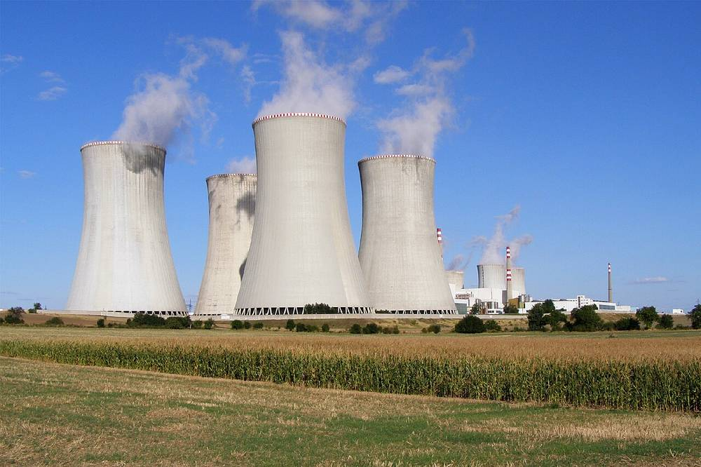

정치
체코 원전 시공사 교체, 국회로…여야 산자위원 "청문회 열어야", 개최 여부는 미정

한수원 "15개월 협상에도 비용 차 1조 원 넘어"…내년 7월까지 새 시공사 뽑고 2027년 4월 건설허가 신청
한국수력원자력이 체코 두코바니 원전 5·6호기 시공사를 바꾸기로 한 데 대해 13일 국회 산업통상자원중소벤처기업위원회에서 여야 모두 청문회를 요구했다. 박성민 국민의힘 의원은 한수원이 계약 협상에서 특정 업체를 밀어주려 했다는 의혹을 들어 청문회 필요성을 제기했고, 박희승 더불어민주당 의원은 계약 조건 변경과 일방적 협상 진행 논란을 들어 조속한 개최를 촉구했다.
김성원 위원장은 양당 간사가 협의해 청문회가 열리도록 해 달라고 주문했지만, 이날 개최 여부와 일정은 정해지지 않았다. 여당 간사인 장철민 민주당 의원 측은 여야가 청문회에 합의했다는 일부 보도에 대해 합의한 바 없다고 밝혔다.
한수원은 10월 29일 대우건설·두산에너빌리티 컨소시엄과의 시공계약 협상 종료를 선언했다. 대우건설은 바뀐 계약 조건을 받은 지 약 3주 만에 최종 입장을 요구받았다고 주장하고, 한수원은 15개월 동안 실무회의 78회 등을 거쳤고 계약금액 10% 인상안까지 냈지만 비용 차이가 1조 원을 넘었다고 설명했다. 한수원은 내년 7월까지 새 시공사를 뽑고 2027년 4월 건설허가 신청, 2029년 11월 착공 일정은 그대로 간다고 밝혔다.
출처: 시사포커스 2026-11-13 이혜영 원문 보기
시민이 만들고 지역이 소유하는 에너지 전환市民がつくり、地域が所有するエネルギー転換市民创造、地方拥有的能源转型An energy transition built by citizens, owned by communities제4섹터 방식 시민주도 지역에너지 공공개발第4セクター方式・市民主導の地域エネルギー公共開発第四部门模式 · 市民主导的地方能源公共开发Fourth-sector, citizen-led public development of local energy광고문의広告のお問い合わせ广告咨询Advertising ›